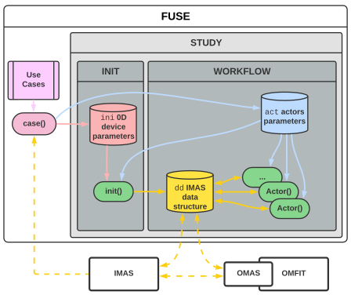

FUSE.jl
FUSE (FUsion Synthesis Engine) is an open-source framework for the integrated design of Fusion Power Plants (FPP). Originally developed by General Atomics, FUSE is now publicly available under the Apache 2.0 license.
📢 Upcoming 2024 Code Camp 📢
Join the FUSE community and help shape the future of Fusion Power Plant design:
- Date: Dec 9th - 13th
- Location: In person @ General Atomics
- Seats: Limited to 40 participants - 🔥 REGISTER TODAY!
Resources
Here are some key resources for getting started with FUSE:
- 📚 Online documentation
- 📊 Summary presentation
- 📜 Preprint publication
- 📦 Package ecosystem
- 🆘 Discord community
- 🎥 Juliacon overview talk
Objectives
FUSE aims to achieve the following objectives:
- ⚡ Provide a highly efficient, modular framework that tightly couples models across different domains.
- 🧩 Integrate plasma physics, engineering, control, balance of plant, and costing systems.
- 🤖 Leverage machine learning to overcome the typical fidelity/speed tradeoff in simulations.
- ⏱️ Support both stationary and time-dependent simulations.
- 💻 Harness parallelism and high-performance computing (HPC) for large-scale studies.
- 🎯 Perform multi-objective constrained optimization to explore design tradeoffs.
- 🔍 Enable comprehensive sensitivity analysis and uncertainty quantification.
Basic Concepts
FUSE is entirely written in Julia and is structured around the following core concepts:
- 📂 Data storage: All data is stored in the
ddstructure, which follows the ITER IMAS ontology. - 🧠 Actors: The core components of FUSE simulations are physics and engineering actors.
- 🕹️ Control: Actor functionality is governed by
actparameters. - 🚀 Initialization: The data structure can be initialized from 0D
iniparameters. - 🔧 Use cases: FUSE includes templates for various machines (e.g., FPP, ITER, ARC).
- 🔄 Workflows: Self-contained studies and optimizations are conducted via workflows, typically involving multiple FUSE simulations.
- 🌍 Interoperability: FUSE interfaces with existing modeling tools like OMFIT/OMAS and the IMAS ecosystem.
A diagram illustrating these concepts is provided below: 
Usage Example
Here’s a simple example of setting up and running a FUSE simulation in Julia:
using FUSE
# Obtain `ini` and `act` parameters for a specific use case
ini, act = FUSE.case_parameters(:FPP)
# Initialize the `dd` structure with 0D parameters
dd = FUSE.init(ini, act)
# Run a stationary plasma actor simulation
FUSE.ActorStationaryPlasma(dd, act)
# Get an overview of the simulation results
FUSE.digest(dd)Installation
FUSE and its related packages are available through the FuseRegistry. To install:
Add the FuseRegistry and General registries, then install FUSE:
using Pkg
Pkg.Registry.add(RegistrySpec(url="https://github.com/ProjectTorreyPines/FuseRegistry.jl.git"))
Pkg.Registry.add("General")
Pkg.add("FUSE")Citation
Please cite this work as follows:
@article{meneghini2024fuse,
author = {Meneghini, O. and Slendebroek, T. and Lyons, B.C. and McLaughlin, K. and McClenaghan, J. and Stagner, L. and Harvey, J. and Neiser, T.F. and Ghiozzi, A. and Dose, G. and Guterl, J. and Zalzali, A. and Cote, T. and Shi, N. and Weisberg, D. and Smith, S.P. and Grierson, B.A. and Candy, J.},
doi = {10.48550/arXiv.2409.05894},
journal = {arXiv},
title = {{FUSE (Fusion Synthesis Engine): A Next Generation Framework for Integrated Design of Fusion Pilot Plants}},
year = {2024}
}Last update on 2024-10-17T17:54:47.736